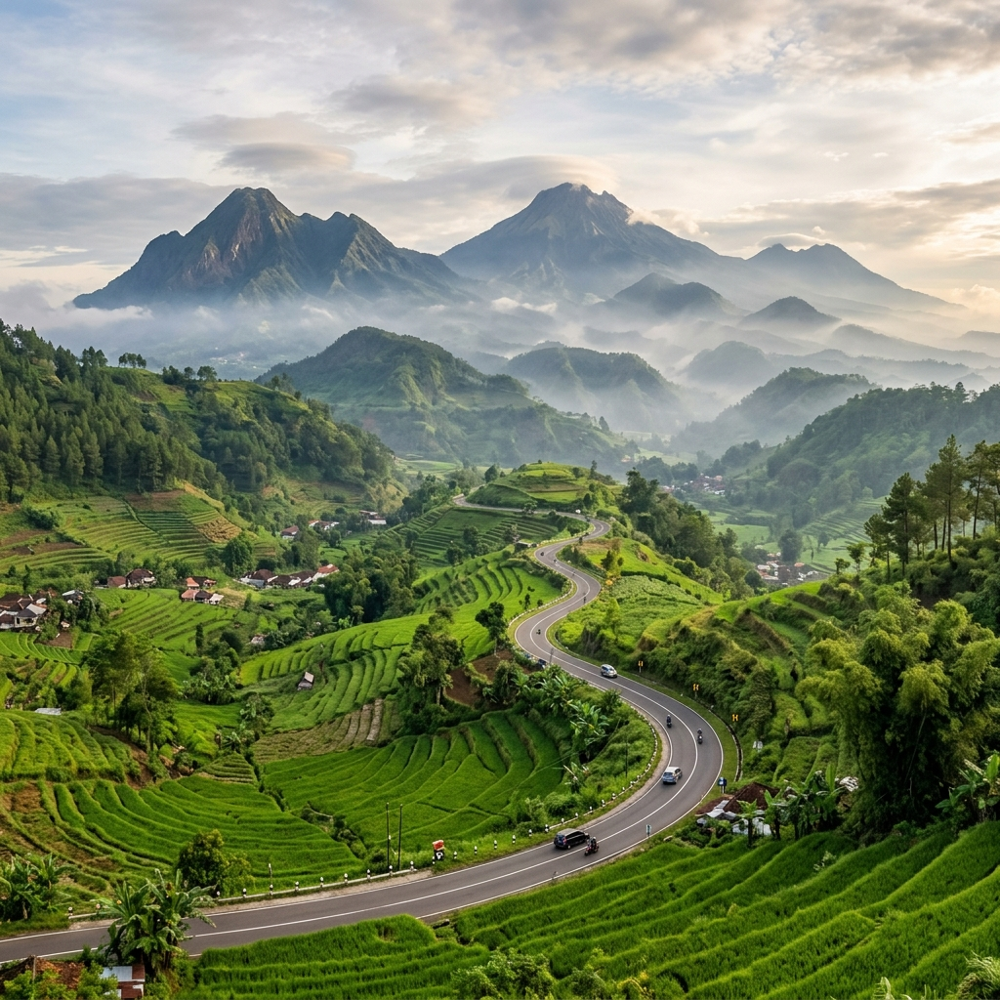

Pantai selatan Jawa Timur menjadi salah satu destinasi wisata Jawa Timur yang masih tergolong sepi wisatawan, tersebar dari Malang selatan hingga Trenggalek dan Pacitan dengan karakter ombak yang perlu diwaspadai.
Ringkasan Inti
- Kawasan pantai selatan Jawa Timur memiliki ombak yang cenderung lebih besar dibanding pantai utara.
- Sebagian pantai di kawasan ini belum memiliki fasilitas wisata lengkap sehingga cocok untuk wisatawan yang menyukai suasana alami.
- Perjalanan wisatawan nusantara ke Jawa Timur tercatat mencapai 181,02 juta perjalanan pada Januari-Oktober 2025 menurut BPS Provinsi Jawa Timur.
- Waktu kunjungan terbaik umumnya pada musim kemarau dengan gelombang laut yang relatif lebih tenang.
- Keselamatan menjadi prioritas utama karena minimnya penjaga pantai di sebagian lokasi.
Apa Ciri Khas Pantai Selatan Jawa Timur yang Belum Ramai?
Ciri khas pantai selatan Jawa Timur yang belum ramai adalah garis pantai yang masih alami, ombak besar khas Samudra Hindia, dan fasilitas wisata yang masih terbatas.
Beberapa karakteristik tambahan:
- Pasir pantai yang sebagian masih bersih karena belum banyak aktivitas wisata massal.
- Akses jalan menuju pantai terkadang berupa jalan desa yang belum sepenuhnya beraspal.
- Warung makan dan penginapan umumnya dikelola oleh warga sekitar dalam skala kecil.
Apa Risiko yang Perlu Diwaspadai di Pantai Selatan Jawa Timur?
Risiko yang perlu diwaspadai di pantai selatan Jawa Timur adalah ombak besar, arus balik atau rip current, dan minimnya petugas penjaga pantai di beberapa lokasi.
Wisatawan disarankan untuk tidak berenang terlalu jauh dari bibir pantai, memperhatikan papan peringatan bila tersedia, dan mengikuti arahan warga setempat mengenai area yang aman untuk bermain air.

Keindahan ombak besar pantai selatan Jawa Timur yang berbatasan langsung dengan Samudra Hindia.
Bagaimana Tips Keselamatan Saat Berkunjung ke Pantai Selatan?
Tips keselamatan saat berkunjung ke pantai selatan adalah selalu memperhatikan kondisi ombak, menghindari berenang sendirian, dan membawa perlengkapan keselamatan dasar.
- Cek informasi cuaca dan ketinggian gelombang sebelum berangkat, terutama pada musim penghujan.
- Hindari area pantai yang memiliki karang tajam atau arus deras meski terlihat tenang di permukaan.
- Berkunjung dalam kelompok dan informasikan rencana perjalanan kepada kerabat.
- Ikuti arahan warga setempat mengenai zona aman untuk berenang atau sekadar bermain di tepi pantai.
Kapan Waktu Terbaik Berkunjung ke Pantai Selatan Jawa Timur?
Waktu terbaik berkunjung ke pantai selatan Jawa Timur adalah pada musim kemarau, ketika gelombang laut cenderung lebih stabil dan akses jalan lebih kering.
Musim penghujan sebaiknya dihindari karena selain risiko ombak yang lebih besar, akses jalan menuju sebagian pantai juga berpotensi licin atau tergenang.
Kesimpulan
Pantai selatan Jawa Timur menawarkan keindahan alam yang masih alami sekaligus tantangan tersendiri dari sisi keselamatan. Wisatawan perlu memperhatikan kondisi ombak, waktu kunjungan, dan arahan warga setempat agar pengalaman wisata tetap aman dan menyenangkan. Untuk destinasi jatim tersembunyi lain di luar kawasan pantai, simak pembahasan air terjun tersembunyi dan desa wisata rintisan Jawa Timur pada artikel cluster terkait.
FAQ
Sebagian area memiliki ombak besar sehingga wisatawan disarankan berhati-hati dan mengikuti arahan warga setempat mengenai zona aman.
Pantai selatan umumnya menghadap Samudra Hindia dengan ombak lebih besar, sedangkan pantai utara menghadap Laut Jawa dengan ombak relatif lebih tenang.
Sebagian besar masih sederhana, sehingga wisatawan disarankan membawa perbekalan sendiri dan mengecek ketersediaan penginapan terlebih dahulu.